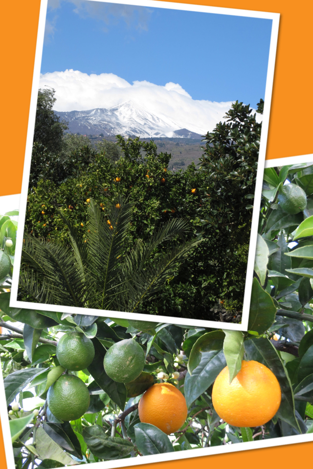
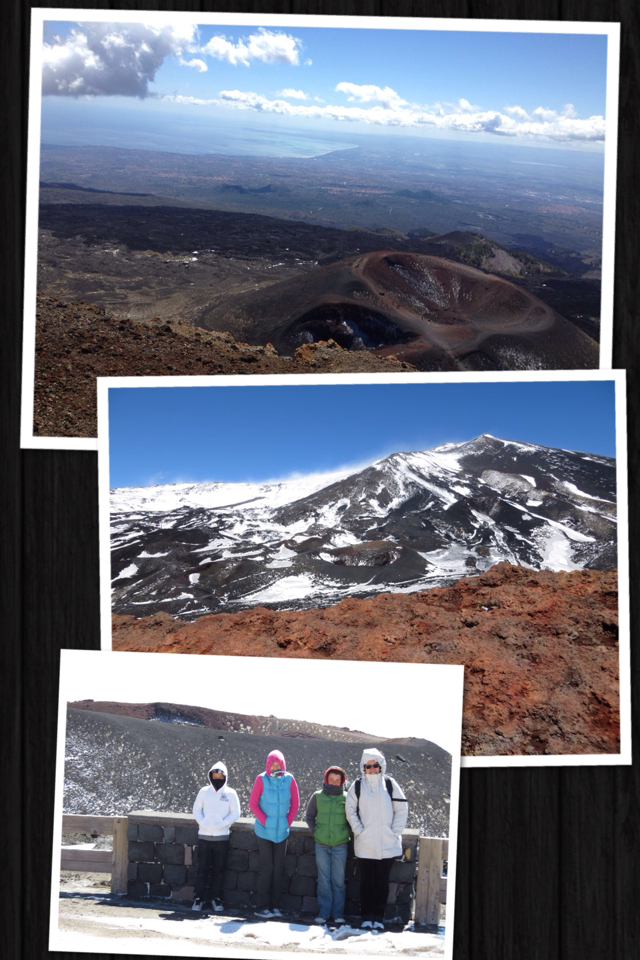
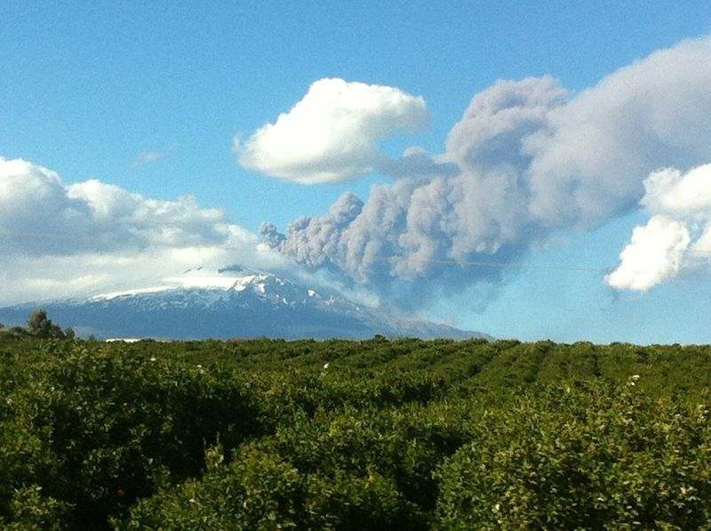

View of the Etna and oranges growing in the parking lot of the hotel La Terra dei Sogni Our seventh day was completely dedicated to visit this glorious volcano, since we had to start our trip back towards Palermo and Trapani, our departure cities on the following day. At the hotel we were told that because of the strong wind it was not possible to get to the very top of the mountain. The cableway was closed, but we could still visit a lower area. And so we started our drive up the curvy road, leaving the sea behind and embracing the view of this majestic mountain. We parked our car and, as soon as we opened the doors, we got hit by a frozen wind that made us all shiver. Panicking, we opened up our luggage and put on basically all the garments we took along: two pairs of pants, 4 t-shirts, 2 sweaters... At the end we looked like human panettoni. And we were still cold.
Mount Etna and us (frozen but still able to smile) However, without being discouraged, we started our walk towards a small crater. At some point the wind was so strong that we had to hold on to each other. Don't get me wrong, I like wind: I come from Trieste, the Italian city with the strongest wind and I love it. But this? I didn't love it. It was almost painful I would say. Even the kids, after the first excitement, couldn't stand it anymore. So we packed up (which is we removed our many layers of clothing once we were back in the car) and left. However, our adventure wasn't over yet. And, I would say, the best was yet to come. As we started our descent, the volcano started erupting with increasing force. And that was beautiful.
Mount Etna in eruptionWe could hear it roar and see it spit lava towards to the sky. A black cloud was forming over it. That was a sight that none of us ever saw before. We felt very lucky to be there at the right time.
After this incredible experience, we started our drive back towards Palermo, or better Terrasini, which is located only a few minutes from the airport Falcone Borsellino. We found our charming B&B, Casa Manzanella, left the luggage and went to dinner. Our last dinner together: Paolo was supposed to catch his flight back to the States early the next morning. Our trip was almost over.